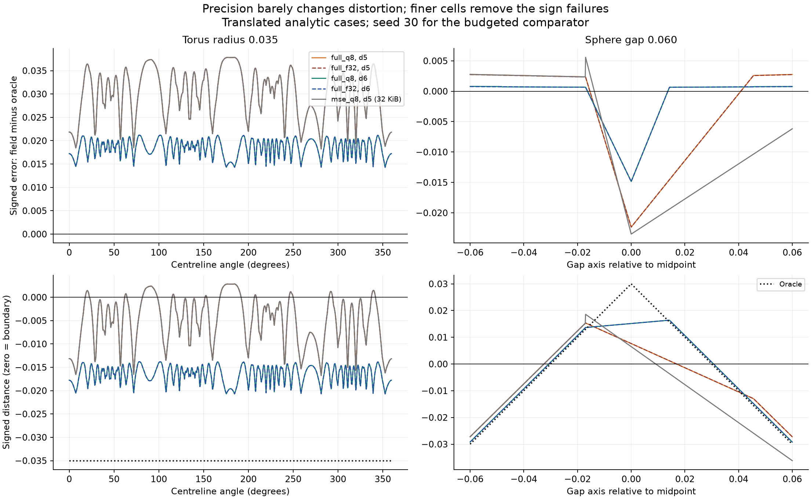
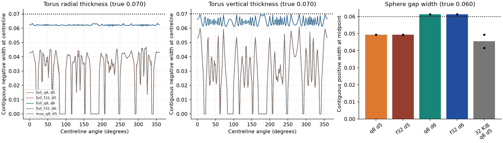

Full depth six recovers the tested 0.035 torus and 0.060 gap; changing depth-five q8 to f32 does not. This is an unequal-byte resolution diagnostic, not a 32 KiB improvement.
Recovery criteria are unchanged. Widths supplement the original tests; they expose residual shape error even when sign and topology pass.


| shape | feature | depth | method | bytes | uniform_mae | uniform_cvar99 | near_mae | near_cvar99 | probes_inside_recall | probes_outside_recall | total_seconds | oracle_calls |
|---|---|---|---|---|---|---|---|---|---|---|---|---|
| double_sphere | 0.06 | 5 | full_q8 | 674148 | 0.00102808 | 0.00927354 | 0.00232211 | 0.0151355 | 1 | 0.851562 | 0.00937935 | 262144 |
| double_sphere | 0.06 | 5 | full_f32 | 1198436 | 0.00102823 | 0.009276 | 0.00232205 | 0.0151295 | 1 | 0.851562 | 0.0069715 | 262144 |
| double_sphere | 0.06 | 6 | full_q8 | 5392740 | 0.000276002 | 0.00463054 | 0.000599657 | 0.00626539 | 1 | 1 | 0.0747121 | 2.09715e+06 |
| double_sphere | 0.06 | 6 | full_f32 | 9587044 | 0.000275769 | 0.00463 | 0.000599566 | 0.00626542 | 1 | 1 | 0.0561346 | 2.09715e+06 |
| double_sphere | 0.06 | 5 | mse_q8 | 32628 | 0.00987478 | 0.0264303 | 0.00672222 | 0.0177961 | 1 | 0.769531 | 0.0573932 | 309592 |
| double_sphere | 0.1 | 5 | full_q8 | 674148 | 0.00104044 | 0.00965268 | 0.00231083 | 0.0143744 | 1 | 1 | 0.0092038 | 262144 |
| double_sphere | 0.1 | 5 | full_f32 | 1198436 | 0.00104048 | 0.0096531 | 0.00231072 | 0.0143745 | 1 | 1 | 0.0070141 | 262144 |
| double_sphere | 0.1 | 6 | full_q8 | 5392740 | 0.000279343 | 0.00483538 | 0.000595136 | 0.00588077 | 1 | 1 | 0.0773333 | 2.09715e+06 |
| double_sphere | 0.1 | 6 | full_f32 | 9587044 | 0.000279233 | 0.00483511 | 0.000595195 | 0.00588092 | 1 | 1 | 0.0586784 | 2.09715e+06 |
| double_sphere | 0.1 | 5 | mse_q8 | 32628 | 0.00962245 | 0.0255642 | 0.00759093 | 0.0193868 | 1 | 0.953125 | 0.0575313 | 309592 |
| torus | 0.035 | 5 | full_q8 | 674148 | 0.000868941 | 0.00880147 | 0.0101478 | 0.0299639 | 0.800781 | 1 | 0.0110003 | 262144 |
| torus | 0.035 | 5 | full_f32 | 1198436 | 0.000868364 | 0.00880051 | 0.0101468 | 0.0299636 | 0.804688 | 1 | 0.007622 | 262144 |
| torus | 0.035 | 6 | full_q8 | 5392740 | 0.000218289 | 0.00230538 | 0.00279619 | 0.0150094 | 1 | 1 | 0.0810257 | 2.09715e+06 |
| torus | 0.035 | 6 | full_f32 | 9587044 | 0.00021791 | 0.00230565 | 0.00279597 | 0.0150101 | 1 | 1 | 0.0618515 | 2.09715e+06 |
| torus | 0.035 | 5 | mse_q8 | 32628 | 0.00951793 | 0.029193 | 0.0104943 | 0.0299717 | 0.800781 | 1 | 0.0707388 | 309592 |
| torus | 0.06 | 5 | full_q8 | 674148 | 0.000868939 | 0.00880147 | 0.00623121 | 0.0266606 | 1 | 1 | 0.0102235 | 262144 |
| torus | 0.06 | 5 | full_f32 | 1198436 | 0.000868364 | 0.00880051 | 0.00623138 | 0.0266601 | 1 | 1 | 0.0076222 | 262144 |
| torus | 0.06 | 6 | full_q8 | 5392740 | 0.000218289 | 0.00230537 | 0.00161173 | 0.0123373 | 1 | 1 | 0.0849344 | 2.09715e+06 |
| torus | 0.06 | 6 | full_f32 | 9587044 | 0.00021791 | 0.00230565 | 0.00161161 | 0.012338 | 1 | 1 | 0.0624362 | 2.09715e+06 |
| torus | 0.06 | 5 | mse_q8 | 32628 | 0.00969989 | 0.030041 | 0.00729583 | 0.0266794 | 1 | 1 | 0.0675407 | 309592 |
| torus | 0.1 | 5 | full_q8 | 674148 | 0.000868943 | 0.00880147 | 0.00377583 | 0.0223936 | 1 | 1 | 0.0101432 | 262144 |
| torus | 0.1 | 5 | full_f32 | 1198436 | 0.000868364 | 0.00880051 | 0.00377634 | 0.0223924 | 1 | 1 | 0.0080963 | 262144 |
| torus | 0.1 | 6 | full_q8 | 5392740 | 0.000218287 | 0.00230538 | 0.000958956 | 0.00893803 | 1 | 1 | 0.0822697 | 2.09715e+06 |
| torus | 0.1 | 6 | full_f32 | 9587044 | 0.00021791 | 0.00230565 | 0.000958668 | 0.00893846 | 1 | 1 | 0.0632729 | 2.09715e+06 |
| torus | 0.1 | 5 | mse_q8 | 32628 | 0.00970506 | 0.0300876 | 0.00696802 | 0.0235042 | 1 | 1 | 0.0628525 | 309592 |
Frozen recovery results · Fitting coverage · Error decomposition · Raw evidence manifest · Profiles · Source/executable manifest
Raw evidence is retained locally in the linked runs directories; it is not bundled into this compact report.